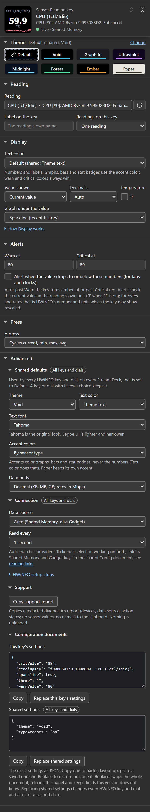

Set Warn at and/or Critical at to change the display when the current value reaches a limit: amber for warning, red for critical.
This page includes the color changes in 1.7. See what changed from 1.6.
Both fields are optional and independent: set one, the other, or neither. A key with no thresholds just shows its themed value.
The two fields
| Field | Effect on a key | Effect on a dial |
|---|---|---|
| Warn at | Whole face flips to amber field / black text | Range bar fill turns amber (single view), or the alerting row’s value (overview views) |
| Critical at | Whole face flips to red field / white text | Range bar fill turns red (single view), or the alerting row’s value (overview views) |
| Alert when the value drops to or below these numbers (the direction checkbox) | Flips the comparison so a low value is the alarm | Same |
An alert recolors the whole key. On a single-reading dial it recolors the range bar fill; on a two-row or three-row dial it recolors the alerting row’s value. The rest of the dial keeps its theme. See Sensor Dial.
Thresholds have a second, quieter effect on any face that draws a range. A key whose Graph under the value is set to Bar or Ring (a one-reading-layout setting) marks the same limits on its track: muted amber from Warn at and muted red from Critical at, running toward the alarmed end, the low end when the direction checkbox alerts on a drop. The dial’s range bar marks them the same way. The zones are blended toward the face background and the live fill draws over them in full color, and a key’s range, which is always automatic, widens just enough to keep a zone visible. A dial pinned with Bar from / Bar to is never widened; a zone outside those bounds is clipped. See Display: sparkline, bar, ring.

How the comparison works
Two rules matter, and both are easy to get wrong:
1. Thresholds are in the displayed unit. The value compared against your thresholds is the live (current) reading in whatever unit the key shows, after the °C→°F conversion, not before. So if you tick °F, a Warn at of 100 fires on a 40 °C core (which displays as 104 °F). Leave °F off and the same sensor is compared in °C. Match your numbers to the unit on the face. One exception: the shared Data units setting re-tiers byte and rate readings for display only. Thresholds still compare against the number HWiNFO reports, so a 12345.6 MB reading is compared as 12345.6 while the key shows 12.3 GB, and a 12000000 B/s reading is compared as 12000000 while the key shows 96.0 Mbps. Switching Decimal to Binary never re-arms an alert. See Data units.
Note: Alert color always tracks the live value, even when the key is showing MIN / MAX / AVG (press cycles the stat mode). Pressing a key to look at its max won’t turn the alert off if the current value is still over the limit, and won’t turn it on just because the historical max was.
2. The trigger is “at or past” the limit. Crossing means reaching the value, not exceeding it:
- Normal direction (higher is worse): alerts when
value ≥ threshold. - Below direction (lower is worse): alerts when
value ≤ threshold.
Critical is checked before warn, so once a reading is past both limits it shows critical.
Decimal commas are accepted
Both fields accept a period or a comma as the decimal separator, so 70.5 and 70,5 both mean seventy-and-a-half. Blank means “no threshold”. Anything that isn’t a number is kept as typed but ignored (treated as no threshold), and the field says so under it: Not a number. Alerts ignore this field until it is one.
Direction: alert when high vs. alert when low
By default higher is worse, the right setting for temperatures, power draw, and usage. Tick Alert when the value drops to or below these numbers for readings where low is the problem:
- Fan RPM: a stalled or dying fan reads low.
- Free disk space: you want to know when it drops under a floor.
- Battery %, available memory, and similar “headroom” readings.
With the box ticked, your Warn at / Critical at values become floors: the alert fires when the reading falls to or below them.
Alert colors
Key alert palettes stay the same across themes: amber with black text for warning, red with white text for critical. Type accents and a Custom color text setting do not override them. Dial overview values use alert foreground colors adjusted for contrast against the row background.
Physical recognition across devices and color-vision differences has not been established.
Worked examples
CPU temperature: warn 80, crit 90
Example values for a CPU temperature key in °C. Choose limits appropriate to your hardware:
- Warn at
80 - Critical at
90 - Alert when the value drops: leave unticked (higher is worse)
Idle and under load the key stays themed. At 80 °C it goes amber; at 90 °C it goes red. If you’d rather read the face in Fahrenheit, tick °F (under Temperature in Display) and enter the thresholds in °F (e.g. 176 / 194); the numbers must match the displayed unit.
The theme reference lists the alert palettes.
Fan RPM: alert when it drops
A fan you want to catch stalling:
- Warn at
500 - Critical at
300 - Alert when the value drops: ticked
Above 500 RPM the key is normal; at 500 or under it warns; at 300 or under it goes critical (0 RPM = a stopped fan = red).
Free disk space: alert on a low floor
Free space in GB, so you notice before a drive fills:
- Warn at
50 - Critical at
20 - Alert when the value drops: ticked
Drops to 50 GB → amber; drops to 20 GB → red.
Tip: When you use the below direction, set Critical at lower than Warn at (crit is the worse, deeper floor). Because critical is evaluated first, an inverted pair (e.g. warn 300, crit 500 with below on) makes the reading go straight to critical without ever showing warn.
Where thresholds live
The Warn at, Critical at and direction controls are in the Alerts section of both the Sensor Reading (key) and Sensor Dial settings panels, below Display. The folded section’s title line states the rule in force (for example Warn ≥ 80 °C · critical ≥ 90 °C, followed by first reading on a key that draws several readings and by the unit it applies to on a dial), and a value that is not a number is flagged under its field and never used. There is one pair of limits per key and per dial, and they persist with the rest of that button’s settings.
On the Two readings, stacked, Three readings, rows and Four readings, quad grid key layouts that one pair watches the first sensor only: the other rows or cells never raise an alert of their own, and the whole key recolors when the first sensor crosses. Put the reading you want alerts on first, or give it its own key.
On a dial, thresholds and the manual bar range are additionally unit-scoped: rotation can put readings with different units on the same dial, so a threshold applies only to readings in the unit it was typed against (a °C warn level can never fire on a fan RPM you rotate to). That unit is the one HWiNFO reports, so if you switch HWiNFO’s own temperature unit, a dial’s thresholds and bar range entered before the switch stand down until you edit one of them again, even when the dial was already showing that unit through its °F box. Details on Dial controls & presets.